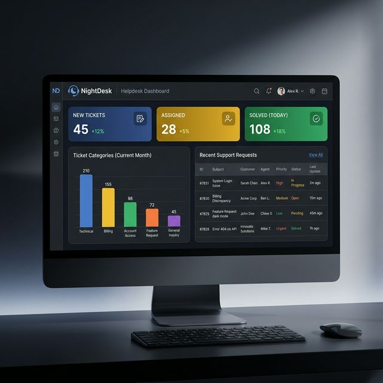
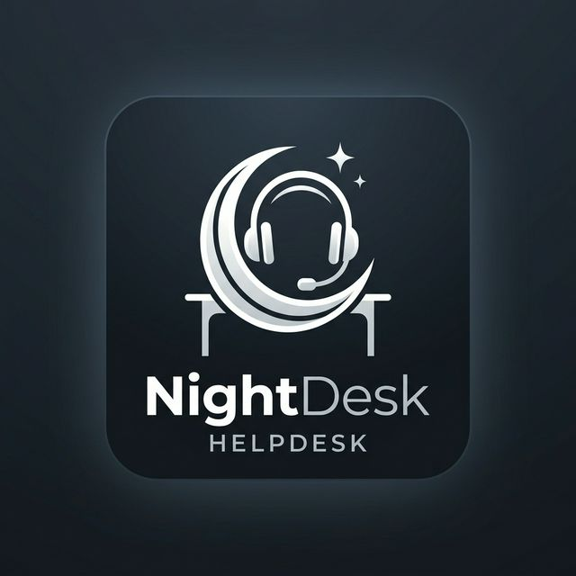

NightDesk Helpdesk provides a sleek, modern, and efficient way to manage customer support. Built specifically for Odoo 17, it leverages the latest framework features to offer a top-tier user experience.
Handle thousands of tickets with ease. Our optimized workflows ensure that your agents stay productive and focused on what matters most: helping customers.
Never miss a deadline again. Built-in SLA tracking provides real-time alerts and automated escalations for tickets approaching their response or resolution time.
Gain instant visibility into your support operations with our real-time dashboard. Monitor KPIs, track ticket volume, and identify bottlenecks at a glance.

Our intuitive ticket form allows for detailed tracking of every customer issue. With built-in SLA timers and smart categorization, resolution times are significantly reduced.
Experience a modern interface designed for focus. From categorical organization to priority tracking, every element is crafted for professional support teams.
